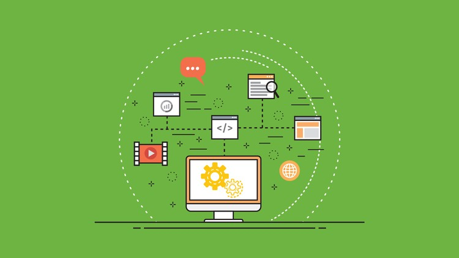

在生产环境下管理Spring Boot应用的生命周期非常重要。Spring容器通过ApplicationContext处理应用服务的所有的beans的创建、初始化、销毁。
本文着重于生命周期中的销毁阶段的处理，我将使用多种方式来实现关闭Spring Boot应用服务。如果你需要了解关于Spring Boot更多内容，请看我之前写过的文章和精品合辑！
Spring Boot Actuator是一个主要用于应用指标监控和健康检查的服务。可以通过Http访问对应的Endpoint来获取应用的健康及指标信息。另外，它还提供了一个远程通过http实现应用shutdown的端点。
首先，我们要在Spring Boot中引入Actuator。
<dependency>
<groupId>org.springframework.boot</groupId>
<artifactId>spring-boot-starter-actuator</artifactId>
</dependency>生产环境通常出于安全考虑，不能将应用关闭的访问完全公开，我们还要引入spring-boot-starter-security。具体的安全配置，请参考学习Spring security，在此不多做叙述！
<dependency>
<groupId>org.springframework.boot</groupId>
<artifactId>spring-boot-starter-security</artifactId>
</dependency>默认情况下，出于安全考虑shutdown端点服务是处于关闭状态的，我们需要通过配置开启：
management.endpoints.web.exposure.include=*
management.endpoint.shutdown.enabled=true
endpoints.shutdown.enabled=true至此，我们就可以通过发送一个Post请求，来停掉Spring Boot应用服务。
curl -X POST localhost:port/actuator/shutdown这种方法的缺陷在于：当你引入Actuator的shutdown服务的时候，其他的监控服务也自动被引入了。
我们也可以自己实现一个Controller开放访问端点，调用Application Context的close方法实现应用服务的关闭。
@RestController
public class ShutdownController implements ApplicationContextAware {
private ApplicationContext context;
@PostMapping("/shutdownContext")
public void shutdownContext() {
((ConfigurableApplicationContext) context).close();
}
@Override
public void setApplicationContext(ApplicationContext ctx) throws BeansException {
this.context = ctx;
}
}我们添加了一个Controller继承自ApplicationContextAware接口，并且重写了setApplicationContext方法获取当前的应用上下文。然后在Post请求方法中调用close方法关闭当前应用。这种实现的方法更加轻量级，不会像Actuator一样引入更多的内容。我们同样可以通过发送Post请求，实现应用的关闭。
curl -X POST localhost:port/shutdownContext同样，当你对外开放一个关闭服务的端点，你要考虑它的权限与安全性
还可以通过SpringApplication 向JVM注册一个 shutdown 钩子来确保应用服务正确的关闭。
ConfigurableApplicationContext ctx = new SpringApplicationBuilder(Application.class)
.web(WebApplicationType.NONE).run();
int exitCode = SpringApplication.exit(ctx, new ExitCodeGenerator() {
@Override
public int getExitCode() {
// return the error code
return 0;
}
});
System.exit(exitCode);同样的效果，使用Java 8 lambda可以这样实现，代码简单很多:
SpringApplication.exit(ctx, () -> 0);我们还可以使用bat或者shell脚本来停止应用的进程。所以，我们首先在应用启动的时候，要把进程ID写到一个文件里面。如下所示：
SpringApplicationBuilder app = new SpringApplicationBuilder(Application.class)
.web(WebApplicationType.NONE);
app.build().addListeners(new ApplicationPidFileWriter("./bin/shutdown.pid"));
app.run();创建一个shutdown.bat脚本，内容如下：
kill $(cat ./bin/shutdown.pid)然后调用这个脚本就可以把应用服务进程杀死。